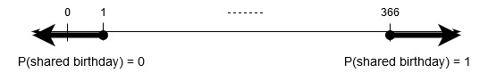

August 4, 2020
Let’s say we have a certain number of people together in a room. What are the chances that any two people in the group share a birthday? The surprising result, hence the title Birthday Paradox, is that with only 23 people in the room the probability that any two people share a birthday is greater than 50%. How do we know this? Let’s try to figure it out for ourselves, and find a general formula or algorithm that describes the probability of a “birthday collision” given a certain number of people.
We can tackle the obvious scenarios first. Clearly we need at least two people for any chance of a shared birthday. Conversely, if we want to be 100% certain of a shared birthday, we need a minimum of 366 people (let’s forget about leap years for now). The greatest number of people we could possibly have together without a shared birthday would be 365, so that everyone gets his or her own day of the year for a unique birthday in the group. There’s no way to add another person to the room without two people having the same birthday! This is an example of the Pigeonhole principle: if \(k\) objects are placed into \(n\) containers, and \(k > n\), then one of the \(n\) containers must have more than one object in it. If this seems mind-numbingly obvious, check out the link for some interesting applications of this statement. My favorite quote from the linked article is:
We can demonstrate there must be at least two people in London with the same number of hairs on their heads as follows. Since a typical human head has an average of around 150,000 hairs, it is reasonable to assume (as an upper bound) that no one has more than 1,000,000 hairs on their head (\(n\) = 1 million holes). There are more than 1,000,000 people in London (\(k\) is bigger than 1 million items). Assigning a pigeonhole to each number of hairs on a person’s head, and assign people to pigeonholes according to the number of hairs on their head, there must be at least two people assigned to the same pigeonhole by the 1,000,001st assignment (because they have the same number of hairs on their heads) (or, \(k > n\)).
The pigeonhole principle can also be used to explain the existence of collisions in hash functions (“any function that can be used to map data of arbitrary size to fixed-size values”). We can consider the concept of a birthday as a type of hash function that takes the time a person was born (this is a real number of arbitrary precision) and extracts the month and day (this could be represented as a 4 digit integer). But anyways, I digress.
In this problem, we can let \(k\) represent the number of people in the room (our pigeons), and we let \(n = 365\) represent the number of possible birthdays a person can have (our pigeonholes). As we stated above, the probability of a shared birthday with 0 or 1 people is \(P_{k < 2}(\text{shared birthday}) = 0\) and the probability of a shared birthday with at least 366 people is \(P_{k > 365}(\text{shared birthday}) = 1\). Now all we have to do is figure out the probabilities of everything in between 1 and 366; in other words we want to find a formula for \(P_k(\text{shared birthday})\) where \(2 \leq k \leq 365\).

The first simplifying assumption that we made was to ignore leap years. Another simple assumption that will make our lives easier is the following: birthdays are distributed uniformly throughout the year. In other words, a given person is equally likely to have a birthday fall on a certain day as any other day, and this probability is exactly one in 365. For all intents and purposes then, being born on a specific day of the year is like randomly choosing a card from a deck of 365 cards, each with a different day written on it.
Now it’s time to turn our problem set up into numbers and calculate the answer. Let’s use the usual trick to say that the probability of something happening is the same as one minus the probability of it not happening:
\(\begin{aligned} P(A)&=1 - P(A^C).\\ P_k(\text{at least one shared birthday}) &= 1 - P_k(\text{no shared birthdays}). \end{aligned}\)
Now all we need to do is calculate the probaility \(P_k(\text{no shared birthdays})\). Let’s continue with our analogy of assigning birthdays as choosing from a deck of cards. We need to draw \(k\) times from our birthday deck of cards, so that all \(k\) people get assigned a birthday. To model the situation accurately, we need to replace the card in the deck each time after we draw, which is known as sampling with replacement. Remember, just because one person has a birthday on a certain day doesn’t rule it out for someone else! Thus in this situation, we want to calculate the likelihood of never getting the same card after \(k\) draws, even when we replace cards back in the deck.
Let’s decide on some notation. The \(k^\text{th}\) assignment of a birthday, or \(k^\text{th}\) draw from the birthday deck will be denoted \(B_k\). Then an assignment of birthdays is the sequence \(B_1 B_2\cdots B_k\). If no birthdays are shared, we should technically add that \(B_i\neq B_j\) for all \(i\neq j\). This imposition of some sort of order on the birthdays of a room full of people may feel intuitively incorrect, but consider this. To get into the room, the people must have come in through an entrance. The sequence \(B_1 B_2\cdots B_k\) can also represent the order in which people walked into the room, in which case person \(1\), who has birthday \(B_1\), entered first, followed by person \(2\) with birthday \(B_2\), and so on. Now when the \(k^\text{th}\) person walks in—if everyone else has \(k-1\) different birthdays—the probability of no shared birthdays equals the previous probability of no shared birthdays multiplied by the probability the newcomer has a different birthday from everyone else. This translates into an elegant recursive definition:
\(\begin{aligned} P(B_1 B_2\cdots B_k) &= P(B_1 B_2\cdots B_{k-1})P(B_k|B_1 B_2\cdots B_{k-1}), \end{aligned}\)
where \(B_i\neq B_j,\,1\leq i,j\leq k\). Furthermore, we can simplify our definition of \(P(B_k|B_1 B_2\cdots B_{k-1})\) when no birthdays overlap.
Let’s go back to our deck of cards with a concrete example. We pull out a card from the deck, write it down, replace it back in the deck, and then shuffle and repeat. We just pulled out, say,
\(\begin{aligned} 5\heartsuit,\text{A}\spadesuit,4\heartsuit,\text{J}\diamondsuit,2\heartsuit,\text{K}\clubsuit,2\diamondsuit. \end{aligned}\)
What’s the probability of getting another new card that we haven’t seen before? Well, there are 52 cards in the deck, and we’ve seen 7 so far. Thus our chances of getting a new card are \(\frac{45}{52}\), or about \(86.5\%\), given we’ve already pulled out 7 unique cards. Generalizing, choosing the \(k^\text{th}\) unique item with replacement from a set of \(n\) unique items, given \(k-1\) unique items have already been drawn, happens with a probability of \(\frac{n-k}{n}\). This means \(P(B_k|B_1 B_2\cdots B_{k-1})=\frac{365-k}{365}\). Additionally, we already know from our set up that \(P_{k=1}(\text{no shared birthdays})=P(B_1)=1\), because a group of 1 cannot have a shared birthday.
Putting it all together, we have
\(\begin{aligned} P_k(\text{at least one shared birthday}) &= 1 - P_k(\text{no shared birthdays}) \\ &= 1 - P(B_1 B_2\cdots B_k) \\ &= 1 - P(B_1 B_2\cdots B_{k-1})P(B_k|B_1 B_2\cdots B_{k-1}) \\ &= 1 - P(B_1)P(B_2|B_1)\cdots P(B_k|B_1 B_2\cdots B_{k-1}) \\ &= 1 - 1 \left(1 - \frac{1}{365}\right) \cdots \left(1 - \frac{k - 1}{365}\right) \\ &= 1 - \left(\frac{365}{365}\right) \left(\frac{364}{365}\right) \cdots \left(\frac{365 - (k-1)}{365}\right) \\ &= 1 - \frac{(365)(365-1)\cdots(365 - (k-1))}{365^k} \\ &= 1 - \frac{365!}{(365-k)!} \cdot \frac{1}{365^k}. \end{aligned}\)
Let’s plug in the answer given at the top, 23 people, and see what happens.
\(\begin{aligned} P_{k=23}(\text{at least one shared birthday}) &= 1 - \frac{365!}{(365-23)!} \cdot \frac{1}{365^{23}} = 0.5072972..... \end{aligned}\)
22 people isn’t quite enough, because \(P_{k=22}(\text{at least one shared birthday}) = 0.4756953.....\) Thus we’ve shown the surprising result that you only need 23 people in a room to have at least a 50% chance that any two people share a birthday.